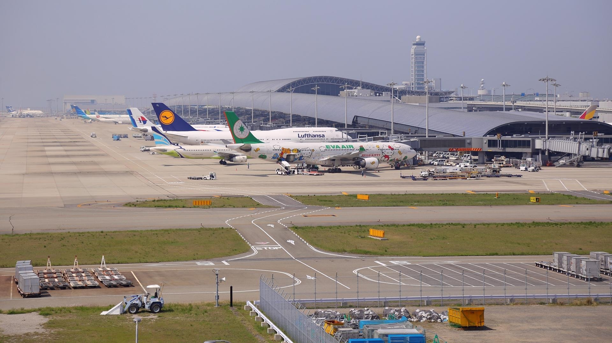

251月・週一
DAY 01 · 9 人 / 兩台車既定動線
台北 → 京都取車 → 滋賀
一家四口搭星宇 JX822，09:20 桃園 TPE → 12:50 關西 KIX（各地當地時間）。入境、領行李後搭 HARUKA 到京都；第一天不排景點。
- HARUKA：3 大 1 小。你、先生與 12 歲女兒為成人票，9 歲兒子為兒童票。班次與購票待確認，預留入境及領行李時間。
- 抵達京都先吃東西、稍作休息。18:00 京都站七條堀川店取車，Honda Fit 或同級；已含雪胎，第二台車訂單待補。
- 取車後開往大津 Airbnb，途中採買早餐、牛奶、水、零食、水果及滑雪後的晚餐食材。當晚入住，先與房東確認抵達時間。
